A case study of the Manning–Metcalf 500 kV corridor and the data center transmission buildout
California is building a lot of new transmission infrastructure to power data centers. The largest single project — a 500 kV line from Manning Substation near Hollister to Metcalf Substation in south San Jose — will cross the Diablo Range foothills, one of the most fire-prone corridors in the state.
California needs this grid capacity, and the South Bay is a logical place for it. But the route this line takes will determine its fire risk profile for the next half-century — and that dimension of risk is largely absent from the regulatory conversation. Using public geospatial data, PSPS event records, and CAISO planning documents, this analysis quantifies the fire exposure and asks what it costs, while there's still time to inform route selection and cost allocation.
The California Energy Commission's 2025 IEPR forecast projects data center peak load growing from roughly 100 MW today to nearly 5,000 MW by the late 2030s — a 50-fold increase over about twelve years. This is the electricity demand equivalent of adding a city the size of San Francisco to the grid.
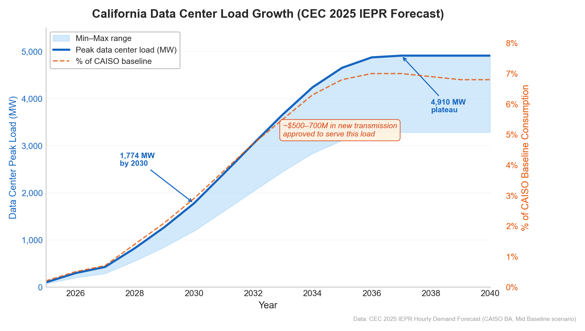
PG&E alone received 34 applications for 4,400 MW of transmission-level service in 2023–2024, a 3,000% increase over the prior nine years (16 applications totaling 145 MW from 2014–2022). Two-thirds of these applications target three substations in the South Bay: Metcalf, Newark, and Ravenswood.
To serve this load, CAISO's 2024–2025 Transmission Plan approved four major projects in the South Bay, including the Manning–Metcalf 500 kV line (formally the "Greater Bay Area 500 kV Transmission Reinforcement"), estimated at $500–700 million with a June 2034 in-service date.
The Manning–Metcalf corridor doesn't exist in a vacuum. To understand why its fire exposure matters, it helps to see the statewide pattern first. California's energy infrastructure shows a striking divergence when it comes to fire risk: power plants have successfully avoided fire zones, but the transmission lines connecting them to load centers haven't.
Over the past decade, 34.6 GW of new generation capacity came online in California. Only 5.9% was sited in CPUC-designated High Fire Threat Districts — well below the roughly 15% of California's land area that HFTD covers. Solar, the dominant new resource, is overwhelmingly sited in the fire-free Central Valley and deserts (1.7% in HFTD). Wind is the exception — mountain pass siting pushes it to 35% — but represents a small share of total additions.
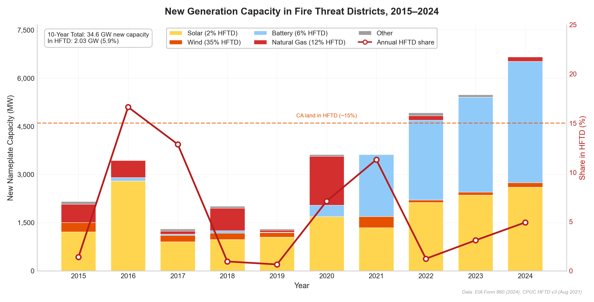
Transmission tells a different story. Generators can be sited wherever the economics are best — deserts, farmland, flat terrain. Transmission lines don't have that luxury; they must connect generation to load, and the path between often crosses mountain passes, foothills, and wildland-urban interface. Using Homeland Infrastructure Foundation-Level Data (HIFLD) transmission line geometries overlaid on the same HFTD boundaries, 23% of California's transmission network passes through fire threat districts — four times the generation share. SDG&E's compact, mountainous territory is the extreme case at 65%, while PG&E — the utility building the Manning–Metcalf line — averages 30%.
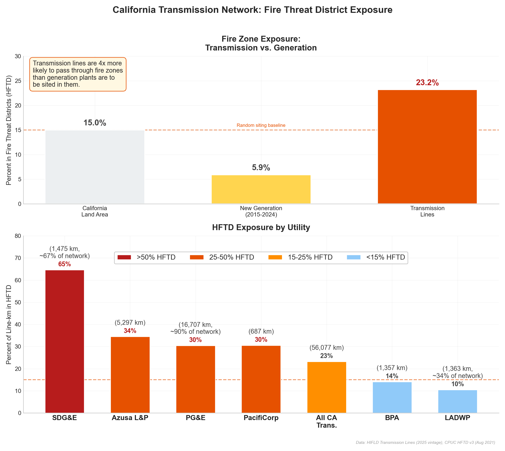
That 23% statewide average masks enormous variation by geography. California's 500 kV transmission backbone runs primarily through the Central Valley — the flat, agricultural heart of the state, where fire risk is minimal. The Manning–Metcalf corridor is the notable exception: it cuts laterally across the Coast Range foothills, perpendicular to the typical north-south routing pattern.
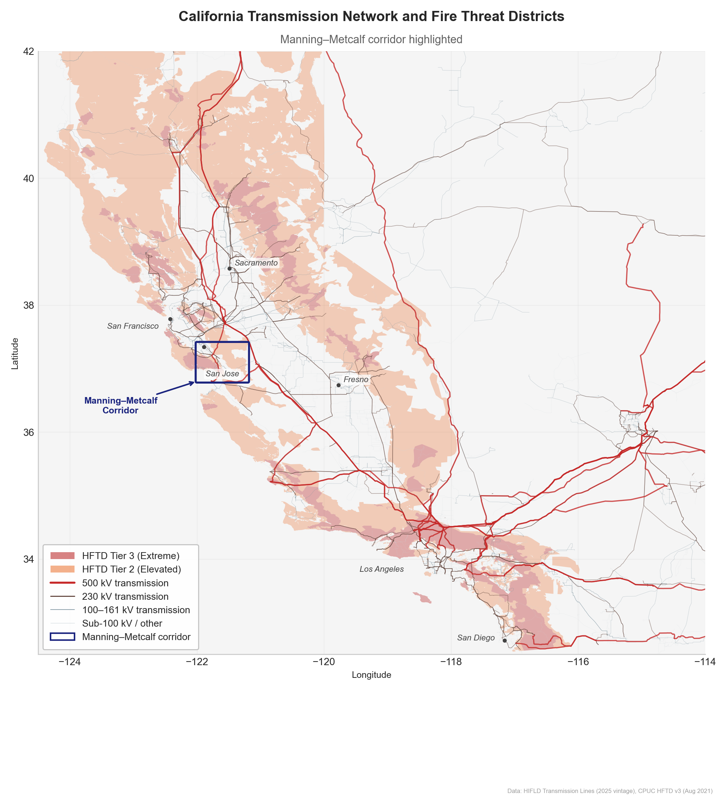
PG&E — the utility building the Manning–Metcalf line — has 30% of its transmission network in fire threat districts, already above the statewide average. Among its 500 kV lines specifically, the fire exposure is lower (~25%) because most run through the Central Valley. The Manning–Metcalf corridor, at 50–60% HFTD, will be a dramatic outlier — and a single project that adds roughly 21 HFTD-miles to PG&E's 500 kV network, a 6% increase in the total fire-exposed length of that voltage class from one line.
The Manning–Metcalf line connects two substations separated by the Diablo Range foothills — a stretch of rugged, fire-prone terrain between Hollister and San Jose. This isn't theoretical fire territory. The SCU Lightning Complex (August 2020), one of the largest fires in California history at nearly 400,000 acres, burned directly through these foothills. The fire weather patterns that drove it — Diablo winds funneling through the passes, dry lightning, grasslands that cure early in summer — are endemic to this landscape.
Using existing transmission line geometries as proxies for where PG&E might build (with "corridor" defined here as the band of plausible routes between the two substations, approximately 5–10 km wide along the Diablo Range), realistic routes show 50–60% fire zone exposure — roughly 18–21 miles of fire-threat territory on a ~36-mile route.
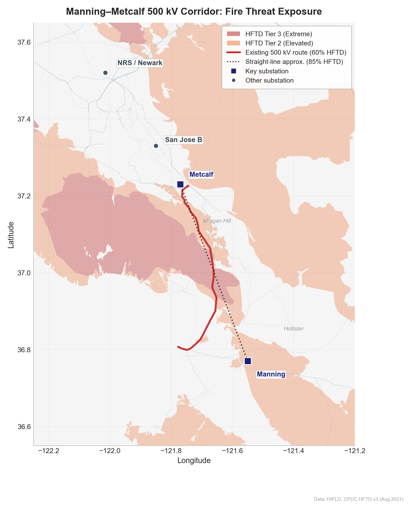
The best proxy — the existing Moss Landing–Metcalf 500 kV line, which follows a similar path at the same voltage class — has 60% of its 36 miles in designated HFTD territory (~21 miles, split 40% Tier 2 and 20% Tier 3). A straight line between the two substations would be 85% in HFTD (~29 of 34 miles), but real transmission lines follow valleys and existing corridors, avoiding the worst terrain.
The realistic range is 50–60% HFTD exposure (18–21 miles) — more than double the 25% average for PG&E's existing 500 kV network. This corridor is an outlier even within its voltage class.
Fire exposure isn't uniform. The segment-by-segment profile reveals that the risk concentrates in the middle third of the corridor — the Diablo Range foothills between Pajaro Gap and Coyote Valley — while the endpoints near Moss Landing and Metcalf are largely outside fire zones.
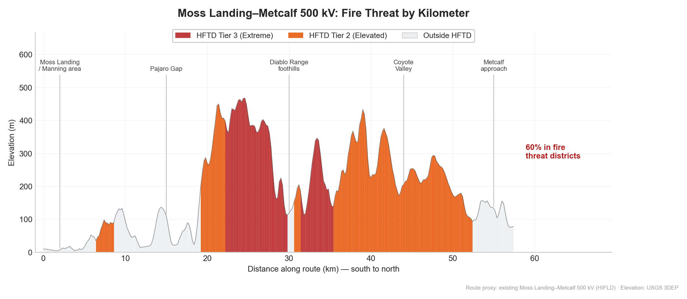
Zooming out from the corridor to the substations it connects reveals a clear geographic pattern. Manning, the southern terminus, sits inside Tier 2 with 78% fire exposure within 5 km. Metcalf, the northern terminus, has 28%. The data center substations — Newark, Ravenswood — are in urbanized areas with near-zero fire exposure.
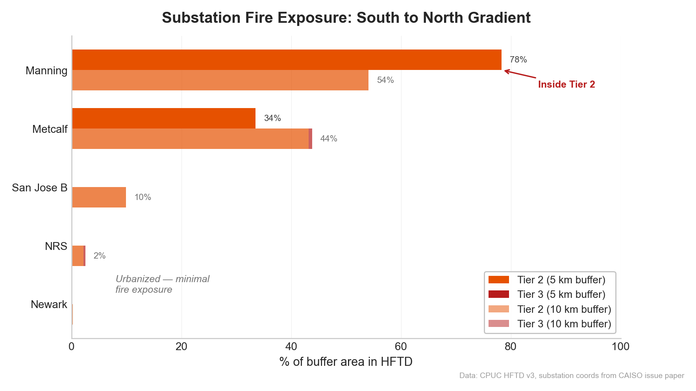
This creates an asymmetry worth understanding: data centers are sited in safe, urbanized locations with reliable connectivity and workforce access, but the bulk power that feeds them must traverse the fire-prone hills between the Central Valley and the coast.
The analysis above uses existing transmission lines as proxies. But could a new line be routed to avoid fire zones? To answer that, this study uses least-cost path analysis — a standard GIS technique for siting linear infrastructure — to model seven routing scenarios between Manning and Metcalf substations. Each scenario applies different weightings to slope, fire zone avoidance, proximity to existing utility corridors, and terrain difficulty.
The method is straightforward: a cost surface is built (a raster grid where each cell has a "cost" to traverse), then the cheapest path from point A to point B is identified. By changing the cost weights, the model simulates routes that prioritize different objectives — shortest distance, fire avoidance, co-location with existing infrastructure, or a blend. To ensure routes serve existing load centers, the modeled paths are constrained through waypoints at Gilroy and Morgan Hill; without these, least-cost paths can swing far into the Central Valley, producing lower fire exposure but impractical routes that bypass the communities the line is meant to serve.
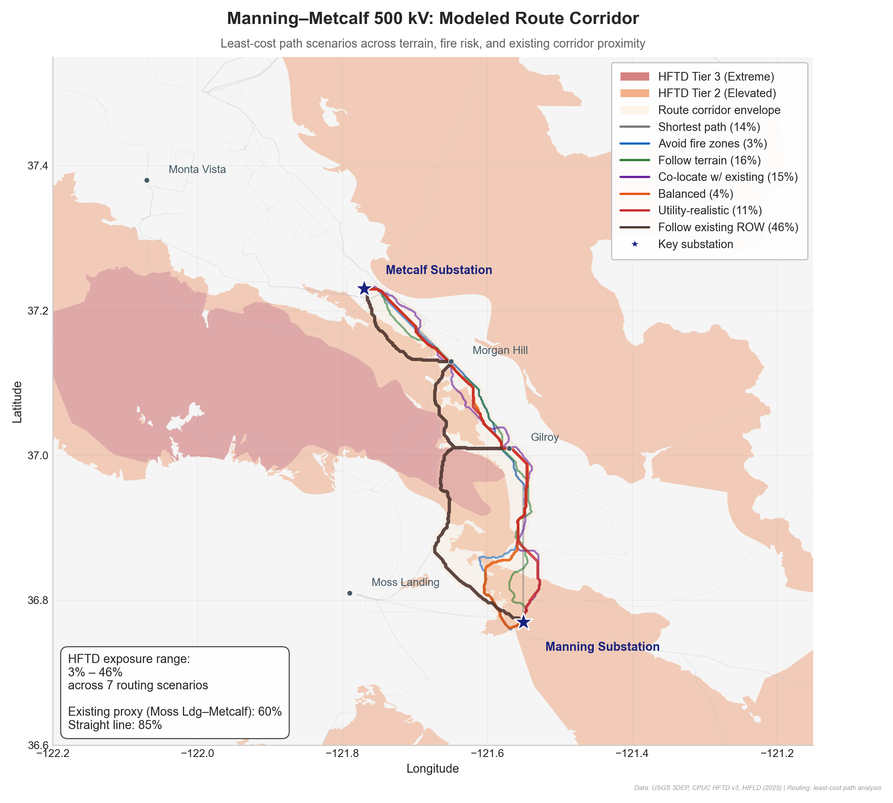
The scenarios span a wide range of fire exposure:
| Scenario | HFTD Exposure | Description |
|---|---|---|
| Avoid fire zones | 3% | Aggressively routes around all HFTD |
| Balanced | 4% | Mild fire avoidance with terrain following |
| Utility-realistic | 11% | Moderate co-location with existing corridors |
| Shortest path | 14% | Minimizes distance only |
| Co-locate with existing | 15% | Strongly follows existing transmission ROW |
| Follow terrain | 16% | Minimizes slope/construction difficulty |
| Follow existing ROW | 46% | Closely tracks the Moss Landing–Metcalf proxy |
| Existing proxy (reference) | 60% | Actual Moss Landing–Metcalf 500 kV line |
| Straight line (reference) | 85% | Direct line between substations |
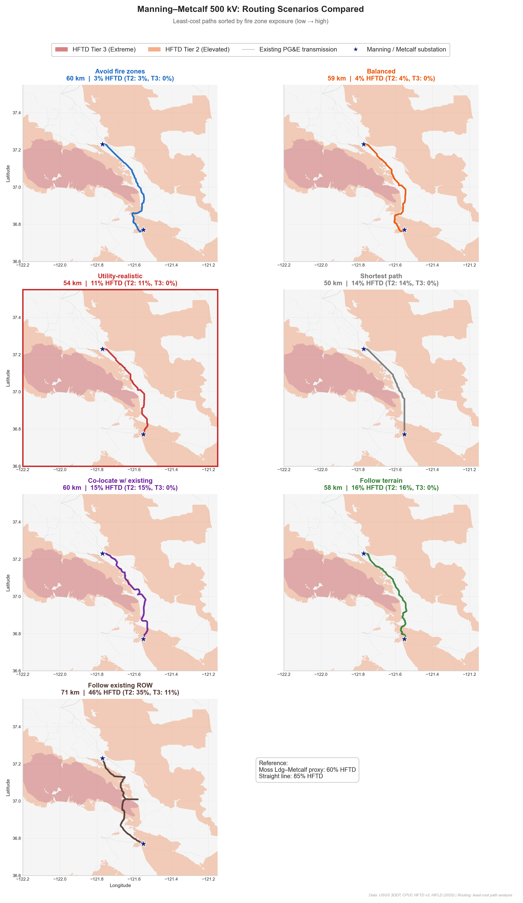
The key finding is that fire-avoidant routing is geographically feasible — routes exist that keep HFTD exposure below 5%. But these routes require significant detours east through the Central Valley, away from existing utility corridors. Routes that follow established transmission paths — which is how utilities typically site new lines, to minimize permitting risk and ROW acquisition — have 15–46% exposure, and routes that closely follow the existing Moss Landing–Metcalf alignment reach 46%.
This creates a tradeoff: lower fire exposure requires longer routes through new territory, while established corridors offer easier permitting but higher fire risk. The question is what that tradeoff costs.
The line has to get built. The question is whether routing through fire zones costs more — and if so, who pays. It's useful to separate two kinds of costs: what goes on the project bill (capital costs that enter rate base), and the ongoing risk exposure that accumulates over the line's 50-year life.
Capital costs — construction, fire hardening, and right-of-way — are what the utility actually spends to build the line. Using CAISO's own cost benchmarks ($5–9M/mile for 500 kV overhead, mid: $6.5M), cross-checked against MISO and Brattle Group estimates, the capital bill varies meaningfully across routes once right-of-way is included:
| Route | HFTD | Construction | Fire Hardening* | ROW | Capital Total |
|---|---|---|---|---|---|
| Avoid fire zones | 3% | $242M | $1M | $43M | $286M |
| Balanced | 4% | $240M | $2M | $32M | $274M |
| Utility-realistic | 11% | $218M | $4M | $27M | $249M |
| Shortest path | 14% | $202M | $4M | $34M | $240M |
| Co-locate w/ existing | 15% | $244M | $5M | $20M | $269M |
| Follow terrain | 16% | $233M | $6M | $38M | $277M |
| Follow existing ROW | 46% | $286M | $25M | $39M | $350M |
| Existing proxy | 60% | $232M | $28M | $14M | $274M |
| Straight line | 85% | $221M | $38M | $62M | $321M |
*Illustrative, order-of-magnitude estimates. Reference rows (italic) are existing/hypothetical baselines, not modeled routes. ROW = right-of-way acquisition; each route blends existing- and new-ROW costs based on how much of the alignment stays within 1 km of an existing transmission corridor. See note on data availability below.
Fire-avoidant routes are longer and require more new right-of-way, which drives up ROW cost. But routes through fire zones incur significantly higher hardening costs, and routes that most closely track existing high-fire corridors end up expensive on both dimensions. The cheapest capital route is actually the shortest path, not the safest one — though the spread remains modest relative to the ongoing risk exposure discussed below.
The fire hardening column in the table above should be read with caution. No public data exists for the per-mile cost of fire-hardening 500 kV transmission lines. This is not a gap in this analysis; it is a gap in the public record. CPUC rate case filings, utility Wildfire Mitigation Plans, FERC Form 1 data, DOE and national lab studies, CAISO transmission plans, EPRI publications, and academic literature were reviewed. None provide a per-mile cost for transmission-level fire hardening at any voltage class, let alone 500 kV.
What does exist:
Distribution hardening is well-documented: PG&E reports ~$3.1M/mile for undergrounding and ~$1.2–1.5M/mile for covered conductor on distribution circuits (4–60 kV). SCE's Wildfire Covered Conductor Program reports similar figures. But covered conductor is not commercially available above ~230 kV, so these costs don't translate to the 500 kV context.
PG&E's total transmission hardening budget (Target GH-11 in the 2025 WMP) is $30.6 million for all transmission hardening across its entire service territory in 2025. No per-mile breakdown or voltage-class disaggregation is provided. Our cost model estimates that Manning-Metcalf alone might need $25–38M in hardening — nearly the entire annual budget for one project.
The only empirical anchor is SDG&E's Sunrise Powerlink: a 500 kV line built through fire-prone terrain in the Cleveland National Forest, completed in 2012. It cost approximately $1.88 billion for 117 miles — roughly $16M/mile (about $20M/mile in 2024 dollars). Compare that to CAISO's Manning-Metcalf estimate of $5–7M/mile. The Sunrise Powerlink included underground segments and more extreme terrain, so it isn't a direct apples-to-apples comparison — but the gap is striking, and it suggests that fire-zone construction can carry a substantial premium that may not be reflected in early-stage cost estimates.
Our inference from cost-per-mile comparisons is that CAISO's $500–700M estimate for Manning-Metcalf may not separately account for fire hardening. The NREL Annual Technology Baseline reports a national median of ~$6.7M/mile for 500 kV (with no fire premium). CAISO's $5–7M/mile is consistent with that baseline — not proof, but a reason to suspect the estimate may not yet incorporate fire-specific design requirements at this stage of planning.
The hardening estimates in the cost model ($1–2M/mile for Tier 2, $2–4M/mile for Tier 3) are extrapolated from distribution-level data and engineering judgment. They are plausible lower bounds for overhead hardening measures (steel poles, enhanced vegetation management, fire-resistant design), but the Sunrise Powerlink precedent suggests the actual premium could be significantly higher — particularly if any segments require undergrounding or extraordinary environmental mitigation.
The absence of this data is itself a policy finding. Fire hardening costs for 500 kV transmission are invisible in every layer of the regulatory record — utility WMPs, CAISO transmission plans, CPUC cost allocation proceedings, and FERC filings. Ratepayers and policymakers cannot evaluate whether fire zone avoidance would be cost-effective because the fire-related cost component has never been disaggregated from total project costs.
The bigger story is what happens over the line's 50-year operational life. Two cost categories scale directly with HFTD exposure: PSPS outage costs (the economic value of lost data center load during shutoffs) and wildfire liability (the expected cost of utility-caused fires under California's inverse condemnation doctrine). These are not line items in the project budget — they're economic risk exposure borne by different parties.
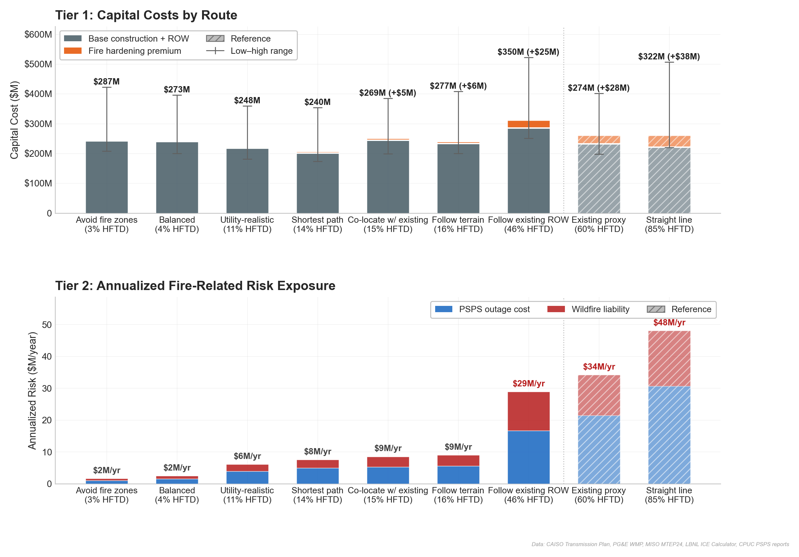
CAISO's own estimate for the Manning–Metcalf line is $500–700M, well above the modeled capital-only range of roughly $240–350M for the seven routed scenarios — likely because it includes environmental review, substation upgrades, and contingency that the construction-only model omits, and because CAISO's ~100-mile project scope is longer than the ~36-mile core-corridor proxy. The annualized risk exposure ranges from $2M/year for fire-avoidant routes to $48M/year for the straight-line scenario. The existing proxy route (60% HFTD) carries roughly $34M/year in combined PSPS and wildfire exposure — and critically, these costs fall on different parties. PSPS outage costs are borne by data center operators (through lost revenue and SLA penalties). Wildfire liability is borne by the utility, its ratepayers, and the AB 1054 Wildfire Fund (California's post-2019 liability-sharing mechanism for utility-caused wildfires).
The risk exposure is large because it scales with the value of lost data center load, which is extremely high. The single most important assumption is the value of lost load (VoLL) for data centers: at $20,000/MWh (mid estimate, from LBNL's ICE Calculator), a 24-hour PSPS event on a 500 MW corridor costs $240M in economic damage. If you believe PSPS will never apply to 500 kV — which PG&E has never done — the ongoing risk is mostly just wildfire liability, and the numbers shrink substantially. If you believe it might — as the corridor's PSPS history on lower-voltage circuits suggests — the numbers get big fast.
These estimates carry substantial uncertainty (the low-to-high range spans roughly 2–3x), but the directional finding is robust: routes through fire zones create materially more economic risk exposure than routes that avoid them, and this risk is currently invisible in the regulatory conversation about who pays for the line. Full assumptions, sources, and uncertainty ranges are documented in the cost model methodology.
The corridor's fire risk isn't just a map exercise — it triggers real operational responses. Since PG&E began Public Safety Power Shutoffs (PSPS) in 2019, the utility has de-energized circuits in this geography 58 times to prevent wildfire ignitions during high-risk weather.
| 58 | 33 | 1.7M | 41 hrs |
|---|---|---|---|
| PSPS events in corridor | circuits affected | customer-hours | median event duration |
Six circuits radiating from Metcalf Substation — the 500 kV/230 kV hub at the heart of the data center buildout — have experienced 10 PSPS events, including a 41-hour shutoff of the Metcalf–Monta Vista 230 kV line. In PG&E's cleaned PSPS dataset, 230 kV circuit shutoffs appear on only four distinct systemwide event dates; Metcalf–Monta Vista was affected on two of those four dates. For data centers planning to draw hundreds of megawatts through Metcalf, these aren't abstract statistics — they're the operational track record of the substation that will be their primary grid connection.
These events occurred on distribution and sub-transmission circuits, not on 500 kV bulk transmission, which PG&E has not historically subjected to PSPS. But they demonstrate that the fire weather in this geography is severe enough to trigger de-energization on the infrastructure already there.
Which circuits bear the brunt of these shutoffs? The top 25 corridor circuits by PSPS frequency reveal a concentration pattern: distribution feeders like Los Gatos-1107 (6 events, 290 cumulative hours) and Morgan Hill-2111 (5 events) are chronic targets. The transmission-level events — though rarer — are the closest lower-voltage analog for the 500 kV buildout.
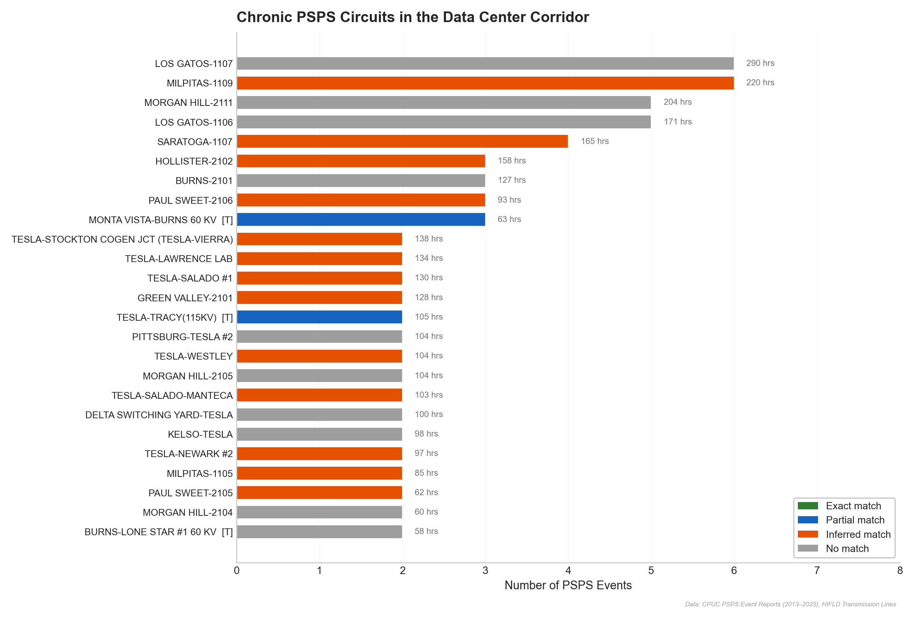
These shutoffs aren't randomly distributed — they follow the fire risk geography. Matching PSPS circuit names to transmission line geometries reveals that the de-energized circuits physically cross the same Diablo Range foothills that the Manning–Metcalf line will traverse.
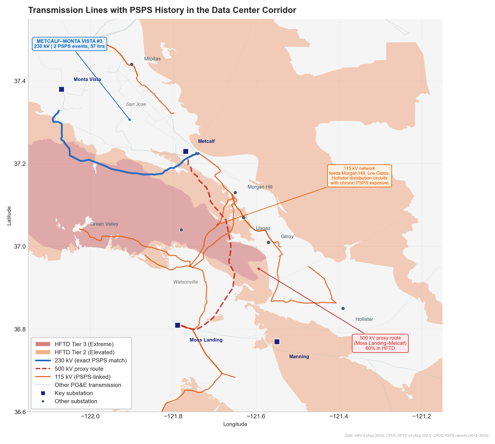
The event chronology shows both a large October 2019 cluster and continued recurrence in 2024 and 2025, indicating that corridor PSPS exposure is ongoing rather than purely historical.
An important caveat: PG&E has not historically applied PSPS to 500 kV transmission lines. Whether and how the new Manning–Metcalf 500 kV line would be subject to PSPS protocols is an open question. But the lower-voltage circuits in the same geography provide an imperfect but relevant analog — they cross the same terrain, face the same fire weather, and experience the same operational shutoffs.
What prompted this analysis was not the fire exposure itself — anyone who's looked at a map of California's fire zones and transmission corridors would expect overlap. What's surprising is the complete absence of fire risk from the regulatory documents governing the data center transmission buildout.
PG&E's Electric Rule 30 application — the proposed tariff for transmission-level data center interconnection — contains zero mentions of fire, wildfire, HFTD, PSPS, or hardening across all 50 pages. The CPUC's six cost allocation questions (testimony filed February 18, 2026) don't ask about fire-related costs. CAISO's transmission plan acknowledges the corridor but doesn't disaggregate fire hardening from total project costs.
There's a structural reason for this. California's transmission permitting has four distinct stages: CAISO determines need (the current stage), the Rule 30 proceeding determines who pays, the CPCN/CEQA process (Certificate of Public Convenience and Necessity / California Environmental Quality Act) evaluates routes and environmental impacts (including fire), and the WMP governs ongoing operations. Fire analysis enters at stage three — but cost allocation is being locked in at stage two, before the route is selected and before fire hardening costs are known. By the time the CPCN/CEQA process reveals the actual fire exposure and hardening requirements, the framework for who pays will already be set.
Meanwhile, PG&E's own Wildfire Mitigation Plan shows the company budgeted $30.6 million for all transmission hardening in 2025 — a fraction of what the Manning–Metcalf corridor alone might require.
The cost of building transmission through fire zones is being allocated without explicit analysis of the fire-related component. This isn't an oversight by any single agency — it's a consequence of a sequential regulatory process where each stage addresses a different question. But the practical result is that ratepayers, data center developers, and regulators are making binding cost allocation decisions without visibility into a material cost driver.
The timeline matters. CAISO's 31-project transmission plan has a 10–15 year horizon, and the Manning–Metcalf CEQA/CPCN application hasn't been filed yet. Route decisions made in the next few years will determine fire exposure for half a century. The agencies involved — CAISO, CPUC, CEC, and the utilities — are managing an unprecedented infrastructure scale-up, and fire risk is a quantifiable dimension of route selection that could inform the decisions still ahead.
For transmission planners and utilities: Route selection for the Manning–Metcalf line hasn't been finalized — the CEQA/CPCN application hasn't been filed yet. The fire risk profile of potential routes varies enormously (3–60% HFTD exposure), and the lifecycle cost implications are material. The route modeling suggests fire-avoidant paths exist that could reduce lifecycle costs materially — and, relative to the highest-fire corridor-following scenarios, by hundreds of millions of dollars — though they require longer routes through new territory.
For regulators: The Rule 30 cost allocation proceeding (testimony filed February 18, 2026) is determining who pays for transmission network upgrades driven by data center load. Fire hardening, PSPS mitigation, and wildfire liability are material cost components that aren't currently visible in that framework. The current framing treats all corridor miles as equivalent; their fire risk profiles differ by an order of magnitude.
For data center developers: The fire exposure is upstream of the data center sites — the substations where facilities connect are in urbanized areas with minimal fire risk. But the transmission that feeds those substations crosses fire territory, creating reliability risk (PSPS) and potential cost exposure (hardening, liability). Developers have an interest in route selection even if their facilities are in safe locations.
For clean energy and backup power providers: The 41-hour median PSPS duration (with a tail extending well past 48 hours) creates a specific, quantifiable market opportunity. Given that battery systems typically cover 4–8 hours and diesel generators face air quality restrictions, the long-duration backup gap is commercially significant.
This analysis is a case study of one corridor, not a comprehensive assessment of all data center transmission. Several important caveats apply.
PSPS circuit names were matched to HIFLD transmission geometries using substation endpoint names; 73% of corridor circuits (44 of 60) matched to at least one transmission feature. Distribution substations without HIFLD matches were excluded from geographic analysis but included in aggregate statistics.
The route modeling uses least-cost path analysis on a rasterized cost surface — a standard GIS technique, but one that cannot capture all the factors that influence real-world route selection (landowner negotiations, environmental sensitivities, cultural resources, local opposition, etc.). The modeled routes should be understood as illustrative scenarios, not engineering proposals.
The cost model carries substantial uncertainty, particularly for fire hardening (no public per-mile data exists at 500 kV, as discussed in the cost section) and PSPS probability (derived from lower-voltage corridor history). Wildfire liability depends on a fat-tailed damage distribution where catastrophic events dominate the expected value, so the NPV framing understates tail risk. The data center load at risk (200–1,000 MW) is estimated from CEC forecasts, not from CAISO load flow studies. PSPS events and wildfire ignitions are correlated (both driven by wind and heat), so treating them as independent risks is a conservative simplification. A one-at-a-time sensitivity analysis and three structural scenarios are provided in the full cost model methodology, which documents all assumptions with source, confidence level, and low/mid/high ranges.
The route proxy methodology uses existing transmission line geometries (from HIFLD) as approximations for where PG&E might build. We use the Moss Landing–Metcalf 500 kV line as the primary proxy because it's the same voltage class, follows a similar geographic path through the Diablo Range, and its geometry is well-documented in HIFLD. The actual Manning–Metcalf route has not been publicly disclosed and may differ. CAISO's project description states ~100 miles, notably longer than the ~36-mile proxy routes; the difference likely reflects substation interconnection work, sub-transmission segments, or longer routing through less constrained terrain outside the core corridor. Our 36-mile proxy represents the core segment where fire exposure concentrates, so the per-mile fire cost premiums applied here still capture the fire-specific risk even if the total project is longer.
HIFLD transmission data was updated to the 2025 vintage (data last edited August 2025, accessed February 2026). Results were validated against this updated extract; statewide and utility-level exposure rates were consistent with earlier analysis using 2016–2021 vintage data.
We analyzed only the South Bay corridor. Three of CAISO's four approved transmission projects serve this area, but SCE and SDG&E also have significant data center interconnection pipelines. Extending this fire overlay methodology to other corridors would provide a more complete picture.
The CEC expects to release busbar-level data center load disaggregation in Q1 2026. That dataset will allow a comprehensive overlay of every substation receiving data center load against fire threat boundaries — extending this corridor-level analysis to a system-wide assessment.
This appendix examines whether fire exposure varies systematically by transmission voltage class. The relationship is non-monotonic: 230 kV lines have the highest statewide exposure (28%), likely because they serve as the "last mile" connecting urban load centers to the 500 kV backbone and must cross more varied terrain. The 500 kV class averages 22% — but the Manning–Metcalf corridor at 50–60% is 2.2 times the PG&E 500 kV average, confirming it is an outlier even within its voltage class.
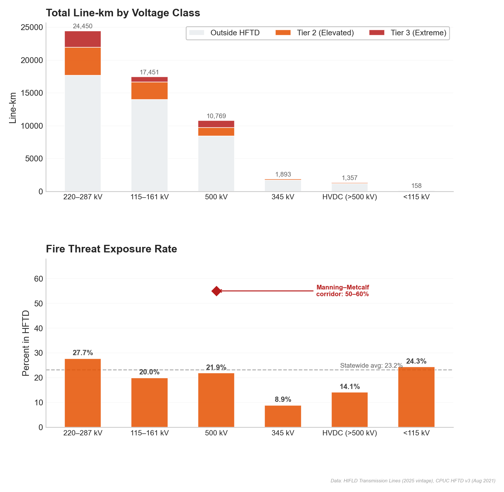
Fire exposure measurement. Generation fire exposure uses point-in-polygon tests (each generator's lat/lon tested against HFTD polygons). Transmission fire exposure uses line-segment intersection (each transmission line geometry intersected with HFTD polygons, with exposure measured as the fraction of line length inside fire zones). Both use the same CPUC HFTD v3 boundaries and are the standard spatial methods for their respective data types. All spatial analysis is projected to EPSG:3310 (California Albers) for accurate area and distance calculations.
Route proxy selection. The Moss Landing–Metcalf 500 kV line serves as the primary proxy for the Manning–Metcalf route because it is the same voltage class (500 kV), follows a similar geographic path through the Diablo Range foothills, and its geometry is documented in the HIFLD national transmission dataset. The corridor's 50–60% HFTD exposure range is bounded by this proxy (60%) and the least-cost path modeling scenarios (46% for routes closely following existing ROW).
PSPS circuit matching. Circuit names from CPUC PSPS event reports were matched to HIFLD transmission line geometries using substation endpoint names. Of 60 corridor circuits, 44 (73%) matched to at least one transmission feature. Match quality is categorized as: exact (both endpoints match), partial (one endpoint), inferred (upstream transmission identified), or unmatched (distribution substation not in HIFLD).
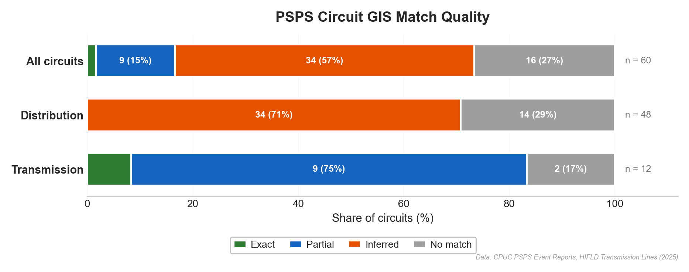
Cost model. Full assumptions, source documentation, confidence levels, and low/mid/high ranges for all cost parameters are in the cost model methodology.
| Dataset | Source | Vintage | Role in analysis |
|---|---|---|---|
| CPUC HFTD v3 | CPUC Fire Threat Map | August 2021 | Fire zone boundaries |
| HIFLD Transmission Lines | DHS HIFLD | 2025 (edited Aug 2025) | Transmission geometry, voltage, ownership |
| EIA Form 860 | U.S. EIA | 2024 | Generator locations, capacity, fuel type |
| CEC 2025 IEPR | CEC Docket 25-IEPR-03 | November 2025 | Data center load forecast |
| PSPS event records | CPUC filings | 2013–2025 | Shutoff history, duration, circuits |
| USGS 3DEP | USGS | 1/3 arc-second | Elevation for route modeling |
| CAISO Transmission Plan | CAISO | 2024–2025 | Project specs, cost estimates |
| MISO MTEP24 Cost Guide | MISO | 2024 | Transmission cost benchmarks |
| NREL ATB | NREL | 2024 | National transmission cost medians |
| PG&E/SCE WMPs | CPUC/OEIS | 2025 | Hardening costs, PSPS protocols |
| LBNL ICE Calculator | LBNL | v2.0 | Value of lost load estimates |
| SDG&E Sunrise Powerlink | CPUC Decision 08-12-058 | 2012 | 500 kV fire-terrain cost anchor |
Five limitations are especially important:
Each parameter has low, mid, and high values reflecting genuine uncertainty. Confidence levels indicate data quality:
| Parameter | Low | Mid | High | Unit | Confidence |
|---|---|---|---|---|---|
| Base construction cost | 5.0 | 6.5 | 9.0 | $M/mile | SOURCED |
| Fire hardening (Tier 2) | 0.5 | 1.0 | 2.0 | $M/mile additional | ESTIMATED |
| Fire hardening (Tier 3) | 1.0 | 2.0 | 4.0 | $M/mile additional | ESTIMATED |
| ROW (existing corridor) | 0.1 | 0.3 | 0.5 | $M/mile | ESTIMATED |
| ROW (new acquisition) | 1.0 | 2.0 | 4.0 | $M/mile | ESTIMATED |
| PSPS probability | 0.05 | 0.15 | 0.30 | /year | DERIVED |
| PSPS duration | 12 | 24 | 48 | hours/event | DERIVED |
| Data center load at risk | 200 | 500 | 1000 | MW | DERIVED |
| Value of lost load | 5000 | 20000 | 50000 | $/MWh | ESTIMATED |
| Wildfire ignition rate | 0.001 | 0.003 | 0.008 | fires/HFTD-mile/yr | ESTIMATED |
| Wildfire expected damage | 50 | 200 | 1000 | $M/fire | ESTIMATED |
| Project life | 40 | 50 | 60 | years | SOURCED |
| Discount rate | 0.04 | 0.06 | 0.08 | real | SOURCED |
ROW cost is blended per route: each route's existing/new ROW fraction is computed by buffering HIFLD transmission lines by 1 km in UTM 10N and measuring what share of the route falls inside the buffer.
Base construction cost. CAISO's 2024–2025 Transmission Plan estimates Manning–Metcalf at $500–700M for roughly 100 miles, or about $5–7M/mile. CAISO's 2023–2024 plan puts Humboldt–Collinsville 500 kV at roughly $7–10M/mile, MISO MTEP24 gives $6.9M/mile for 500 kV, and Brattle (2024) reports about $6M/mile for 765 kV. California costs tend to run above national averages because of labor, terrain, and permitting.
Fire hardening (Tier 2/Tier 3). PG&E's 2025 WMP reports distribution undergrounding near $3.1M/mile and a $30.6M transmission hardening budget without a per-mile breakdown. No public 500 kV hardening premium exists. Tier 2 is treated as roughly an 8–30% premium on base cost; Tier 3 is assumed to be about 2x Tier 2. Actual costs depend on whether mitigation is driven by pole design, vegetation management, undergrounding, or more specialized fire-resistant construction.
ROW (existing vs. new). Existing ROW generally requires easement renewal or widening, not full acquisition. New ROW through the Coast Range can require private land acquisition, environmental review, and potentially eminent domain. Rural western transmission ROW estimates are commonly cited around $0.5–2M/mile, with project-level CEQA/CPCN review adding additional fixed costs not captured here.
PSPS probability. CPUC PSPS reports from 2013–2025 show corridor circuits averaging roughly one event every two years. The existing Metcalf–Monta Vista 230 kV line appears in two PSPS events over twelve years, or about 17% annually. Distribution circuits in the corridor see much higher frequencies; this study adjusts downward for 500 kV because PG&E has not historically de-energized bulk 500 kV lines.
PSPS duration. Corridor transmission and distribution events typically last 24–48 hours; the Metcalf–Monta Vista 230 kV line averaged about 29 hours per event.
Data center load at risk. CEC forecasts imply major South Bay data center load growth, while PG&E's Rule 30 record shows a much smaller historical baseline. The load at risk depends on how much of the South Bay fleet is ultimately served through this corridor and whether backup paths exist.
Value of lost load. LBNL's ICE Calculator 2.0 gives large commercial and industrial interruption costs in roughly the $20–50/kWh range. Data center SLA penalties and equipment sensitivity put this customer class near the upper end of that spectrum.
Wildfire ignition rate. CAL FIRE data implies a statewide utility-caused fire rate on HFTD lines around 0.004 fires per mile-year across all voltage classes. Transmission should be lower than distribution because of greater clearances and different design standards, so the model adjusts downward for 500 kV.
Wildfire expected damage. Most utility-caused fires are small, but catastrophic fires dominate the expected value. The Camp Fire and PG&E bankruptcy illustrate the tail risk. The $200M mid assumption reflects a blend of many small fires and rare catastrophic losses.
Project life / discount rate. FERC and CPUC depreciation schedules imply roughly 40–60 years for large transmission assets. CPUC cost-of-capital proceedings imply a real discount rate near the 6–7% range.
The table below extends the capital-only comparison in the main text to include the NPV of ongoing risk exposure over the project's 50-year life.
| Scenario | HFTD | Construction | Hardening | ROW | PSPS (NPV) | Wildfire (NPV) | Total |
|---|---|---|---|---|---|---|---|
| Avoid fire zones | 3% | $242M | $1M | $43M | $16M | $10M | $313M |
| Balanced | 4% | $240M | $2M | $32M | $24M | $15M | $312M |
| Utility-realistic | 11% | $218M | $4M | $27M | $62M | $35M | $344M |
| Shortest path | 14% | $202M | $4M | $34M | $78M | $40M | $359M |
| Co-locate w/ existing | 15% | $244M | $5M | $20M | $83M | $52M | $404M |
| Follow terrain | 16% | $233M | $6M | $38M | $89M | $53M | $418M |
| Follow existing ROW | 46% | $286M | $25M | $39M | $263M | $193M | $806M |
| Existing proxy (Moss Ldg–Metcalf) | 60% | $232M | $28M | $14M | $338M | $201M | $813M |
| Straight line | 85% | $221M | $38M | $62M | $483M | $274M | $1,079M |
All values are in millions of 2024 dollars. PSPS and wildfire columns are net present value over the project's 50-year life at a 6% real discount rate.
Base case: utility-realistic route (11% HFTD), mid assumptions. Total lifecycle cost: $344M.
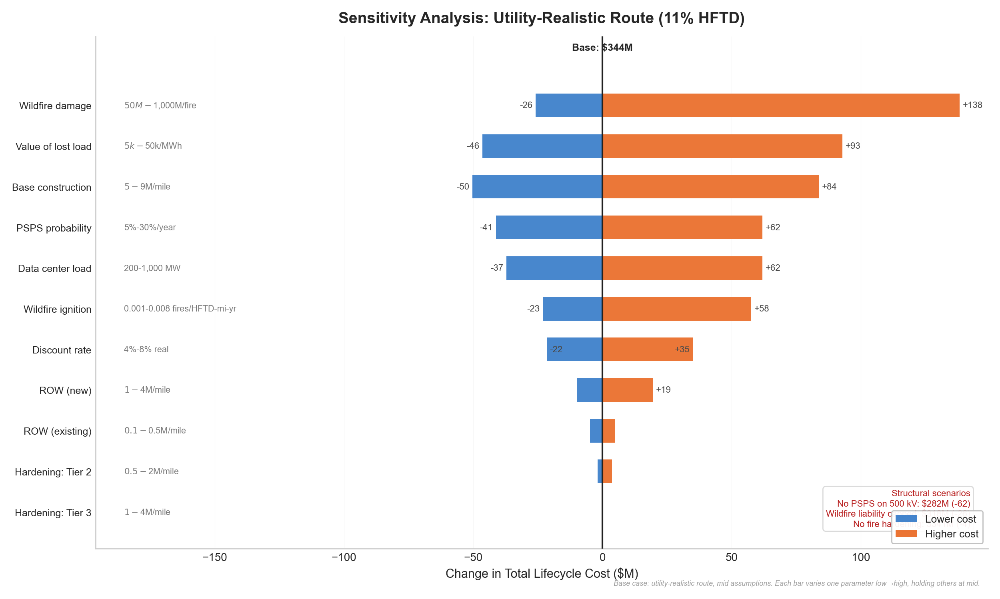
| Parameter | Low | Mid | High | Low Cost | High Cost | Swing |
|---|---|---|---|---|---|---|
| Wildfire damage/fire | 50 | 200 | 1000 | $318M | $482M | $164M |
| Value of lost load | 5000 | 20000 | 50000 | $298M | $437M | $139M |
| Base construction cost | 5.0 | 6.5 | 9.0 | $294M | $428M | $134M |
| PSPS probability | 0.05 | 0.15 | 0.30 | $303M | $406M | $103M |
| Data center load | 200 | 500 | 1000 | $307M | $406M | $99M |
| Wildfire ignition rate | 0.001 | 0.003 | 0.008 | $321M | $402M | $81M |
| Discount rate | 0.04 | 0.06 | 0.08 | $379M | $323M | $57M |
| ROW (new) | 1.0 | 2.0 | 4.0 | $335M | $364M | $29M |
| ROW (existing) | 0.1 | 0.3 | 0.5 | $340M | $349M | $10M |
| Fire hardening (Tier 2) | 0.5 | 1.0 | 2.0 | $343M | $348M | $5M |
| Fire hardening (Tier 3) | 1.0 | 2.0 | 4.0 | $344M | $344M | $0M |
Sorted by swing. The Tier 3 hardening row shows no movement because the utility-realistic route has no Tier 3 exposure.
Three "what if" scenarios test whether the fire-cost premium survives under different structural assumptions:
| Scenario | Description | Total Cost | vs. Base |
|---|---|---|---|
| No PSPS on 500 kV | PSPS probability = 0 (500 kV never de-energized) | $282M | -$62M |
| Wildfire liability capped | Wildfire damage capped at $50M (insured amount, no inverse condemnation) | $318M | -$26M |
| No fire hardening | Zero hardening premium (standard construction in HFTD) | $341M | -$4M |
Even under the most aggressive assumption — that 500 kV lines are never subject to PSPS — the fire-related cost premium does not disappear. It falls, but wildfire liability and ROW costs remain.
Full code, data, and methodology available in the project repository.
This analysis uses only public data and open-source tools. It is independent research — not affiliated with any utility, developer, or regulatory party.